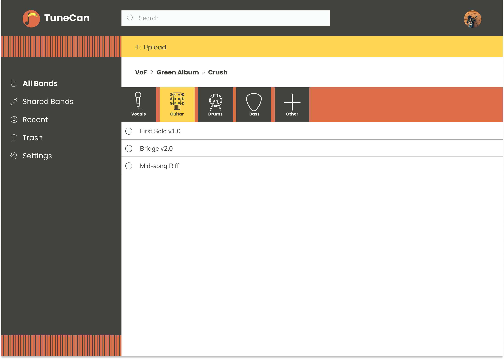
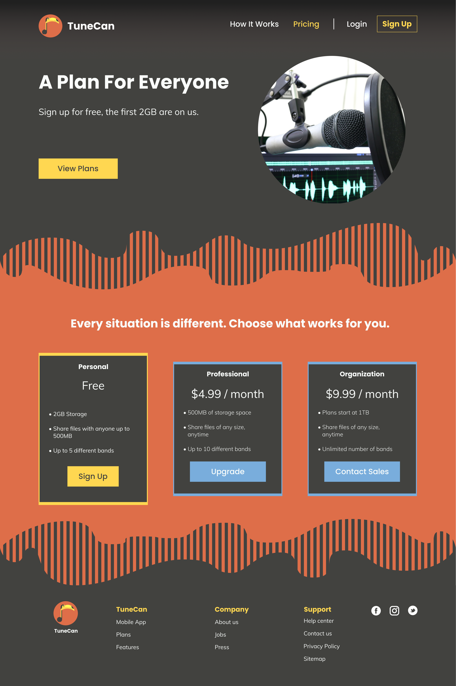

TuneCan
Your Components Anywhere
Whether on tour or at home, TuneCan makes it possible for musical artists to store their song components for easy editing.

Deliverables:
- User Surveys
- Competitive Analysis
- Personas
- User Flows & Stories
- Site Map
- Branding
- Mockups
- User Testing
Design Role:
- User Research
- Visual Design
- Branding
Tools Used:
- Figma
- InVision
- Adobe Illustrator
- Usability Hub
What is TuneCan?
Musical artists and producers constantly save song components for use in songs. These components can be as small as a hit on a drum, to complete guitar solo’s. Musicians need to spend more time perfecting their song and less time trying to find the correct components. Whether playing in a garage or selling out stadiums, TuneCan was created to help all song creators improve their workflows.
Problem:
Song Creation is an extremely complex process that typically has many people involved. Artists and producers record multiple versions of drum tracks, guitar solos, vocals and more. They even record random sounds they feel may fit the vibe of a particular song. Artists and producers needed a way to save and organize their components for easy use down the road. Life on the road is hard and stressful; however, making music should not be.
Solution:
TuneCan is a cloud storage application that provides the necessary tools to artists and producers to store and organize their song components. The goal is to provide a platform in which song components can be uploaded and organized by band, album, songs, and then down to the specific instrument. Each user can have multiple bands and songs for any projects they desire to pursue.
Landing Page
About Page - Collaboration
All Bands Dashboard Page
Research
User Survey:
I began with a user survey that was sent out by email. I had over 20 responses and the following results were gathered:
- 94.4% of participants used cloud storage to upload content.
- 53.6% said collaboration was “Important.”
- 72.2% said content organization was “Very Important.”
- 83.3% said they use both the computer and mobile to access their storage.
- 100% said they platform of choice was a “Desktop Computer.”
Competitive Analysis:
To get an idea of what some similar applications were doing well and not so well, I did a SWOT analysis on three storage applications. These include Evernote, Flickr, and Dropbox. Knowing what similar companies were doing helped shape the scope of this project and provided a great base to begin finding the path forward for TuneCan.
Evernote
-
Strengths:
- + Great Organization
- + Note-taking capabilities
- + Images and PDFs can be uploaded
- + Can be used on a wide range of devices
-
Weaknesses:
- - No version control
- - No simultaneous user collaboration
- - Free version is limited
- - Complex user interface
-
Opportunities:
- • Business becoming more sustainable
- • Teams need collaboration
- • Decrease payment cost for premium
- • Increase organizational abilities
-
Threats:
- • Not everyone has a device to access application
- • Everyone in business needs a company issued device
- • Flooded market
- • Steep learning curve
Flickr
-
Strengths:
- + Great for porfolios
- + Image editing in application
- + Private and public storage
- + Can be embeded into blogs and websites
-
Weaknesses:
- - Switched ownership in recent years
- - Premium account and free accounts change often
- - Limited to 1000 photos
- - Limited to photos and videos
-
Opportunities:
- • New ownership could lead to new changes
- • Broaden uploading capabilities
- • Create ways for people to monetize their content
- • Increase organizational abilities
-
Threats:
- • Other competing companies
- • Expensive premium prices
- • No way for creators to make money
Dropbox
-
Strengths:
- + 2GB of free storage
- + Payment plans for businesses
- + Dropbox paper is a nice addition
- + Password protected sharing capabilities
-
Weaknesses:
- - More focused on documents and files
- - Not as collaborative as other platforms
- - Dropbox paper is limited
- - Google Drive offers more space
-
Opportunities:
- • Expansion of Dropbox Paper
- • Growing demand for cloud storage applications
- • Collaboration is becoming ever more important
-
Threats:
- • Overcrowded market
- • Google Drive has more applications
- • Niche cloud storage applications
Personas:
Three user personas were created to define the scope of this project. Due to TuneCan being an application based on musicals artists and producers there were only three distinct users.
- • Musical Artist(s)
- • Family or Friend of Artist
- • Music Producer
Mich B.
"As someone involved in the local music community, I would love a place to hear what they have been working on"
Age: 26 / Location: Rochester, NY
Goals:
- A platform to share her music with her friends and family
- A platform to hear and receive other people's music
- Ability to record short voice memos to record jingles on the road
Frustrations:
- Other platforms are too complicated and have too many options
- Needs access to content online and offline to share her music with anyone
- Storage limitations and expensive premium membership options
Beth H.
"My son is always on the road. Being able to hear his new music and share it with friends is a way for us to connect. "
Age: 63 / Location: Austin, TX
Goals:
- Easy interface to find her sons songs
- Abilty to receive song components from her son, and a way to share with her friends
- Ability to download song components for use offline
Frustrations:
- Owning an older computer she gets frustrated by load times
- Gets overwhelmed by busy applications that have too many features
Daniel J.
"Always being on the road and producing music is tiring. Having one place to store my componets would be so beneficial"
Age: 30 / Location: Brooklyn, NY
Goals:
- A platform to store all his current songs for easy access
- A way to organize his song components for easy song editing
- Ability to store music public and privately
Frustrations:
- Other platforms are more directed towards file storage
- Hard to share song components with other musicians
- Other sites do not contain the level of organization that he requires
Information Architecture
User Stories
After all of the research was complete and organized I moved on to create user stories. I created a priority list of what the application needed now and what could be implemented in a future state.
-
New User:
- High Priority
- • Create Account
- • Upload Content to the account
- Medium Priority
- • Ability to organize content
- • Ability to take save individual compoents
- • Ability to share my content
- Low Priority
- • Ability to share via private link
- • Unlimited storage
- • Follow family and friends
-
Returning User:
- High Priority
- • Upload content
- • Organize by musical component
- Medium Priority
- • Easy Interface to navigate
- • Voice memos to autosave
- • Reach content on mobile and web
- Low Priority
- • Visible amount of storage
- • Ability to upload unique file formats
- • Write notes on other people's music components
User Flows
User Flows were created for the most important processes discovered during the research phase. These included sharing content, uploading content, organizational methods, and more.
Site Map:
The last step before beginning wireframing was to create a site map. Due to the nature of cloud storage applications, things can get confusing. The site map was a nice way to stay in the right direction when creating the mockups.
Site Map
Visual Design
Branding
Once the application felt like it was coming alive, branding became a massive part of the final solution. Unfortunately, people judge books by their cover which is why TuneCan had to appeal to all musicians. It had to look modern, simple and stylish.
Multiple mood boards were created to get different ideas of what TuneCan could be. After many hours of contemplation a more serious,
dark look was chosen. I did this for multiple reasons. One, musical artists and producers spend hours behind a computer screen when
not recording. This is to mix, edit, and rearrange their musical pieces. I did not want to cause eye strain during these long hours.
Lastly, this application is meant to help improve the workflow of artists. This is a professional application, and I wanted it to look
that way.
Color Palette:
A fun, yet professional color palette was chosen. I wanted to give the feeling of creativity while also coming off as a brand that should be taken seriously. The bright yet give the sense enthusiasm and happiness, while the darker colors give it the sense of elegance.
Typography:
- • Brand Typeface - Poppins
- • Complimentary Typeface - Muli
These typefaces were used because they look fun, are easy to read, and truly express the voice of TuneCan.


Logo Design and Process
I started with some basic sketches to determine the route I wanted to take. Out of the few pages of sketches I felt that the toucan with the quarter note best fit the feeling of TuneCan.

Initial Logo Drawings

Final Logo Drawing
With the drawing picked out I went ahead and created it in Adobe Illustrator. The first round of the design was a great place to start but more work needed to be done. From the initial design, I was able to refine my logo by adding a heavier stroke, and adding some nice colors to compliment the brand.

Black and White Logo

Colored Logo
To make the logo appealing to the eye,I decided to create this logo using the fibonacci sequence. I was able to create perfect curves that are all in proportion to one another and used the shape builder tool to merge and dissect the pieces I did not want. Lastly, I had to increase the stroke on the final design. The stroke was too thin and looked off compared to the size of the body of the toucan.
This logo represents the brand in many ways. The body of the Toucan is in the shape of a quarter note and the Toucan in general looks fun
and inviting. In addition, it is easily recognizable which will help increase brand recognition.
Logo with brand name
Wireframes:
Once branding was complete it was finally time to create some mockups. I started by drawing out some basic sketches of what I thought the layout would look like.

Homepage, Upload, and Song View Sketch

Homepage, Landing, and Sign Up/In Sketch

Sharing, Add Members, and Profile Sketch

Organize, Landing, and Trash Folders Sketch
With these sketches I was able to create a working prototype using Figma and InVision. These screens were very basic and contained general information.

Landing Page Mockup

About Page Mockup

Song Component Mockup
User Testing Round 1:
User testing was extremely helpful in coming to the final design of TuneCan. Users were asked what they thought the website was for, to create an account, organize content, share content, and sign out. From these rounds of testing a few things were brought to my attention:
1) My content strategy needed work. The site was too vague and it left users feeling confused.
2) The uploading of song components needed work. Users were getting confused uploading their content to the application.
3) Potential issues with selecting more than one song file at once.
This feedback was helpful and used to create the high fidelity mockups.
High Fidelity Mockups:
With the feedback from the initial round of testing, the high fidelity mockups were made. Although the feel of the site did not change, certain components and user flows were updated for better performance. I did a complete overhaul of the content strategy. Users were getting confused of the sites purpose and I really tried to articulate the purpose of the site this time around. I reworked the song selection, and content uploading by using contextual UX.

User Dashboard
Song Component Organization

How it Works Page
Payment Plans Page
Preference Testing:
In between the creation of high fidelity mockups and more user tests I performed some preference testing on screens. I tested to see how people responded to shape changes, where a search bar should go on mobile, and if modal windows were effective in the design.

(65%)
Mobile Menu with TuneCan
VS

(35%)
Mobile Menu without TuneCan

(43%)
Dashboard with Soundwaves
VS
(57%)
Dashboard without Soundwaves
High Fidelity Mockup Testing:
As in the initial mockups, users were tasked with completing specific tasks while thinking out loud. The following tasks were:
- 1) Sign up for an account
- 2) Upload a song components
- 3) Organize a piece of content
- 4) Share an album with a friend
This round went much better than the original. Each user tested found errors in my design that I was able to fix prior to the next round of testing. This ranged from simple grammatical issues, to issues where content was only able to be uploaded from the main screen. These final rounds of user testing truly helped make TuneCan a solid product.
Below are some of the changes made to the final design. In the first case, the addition of an "Other" option was added. People may have unique
instrument components that are not your standard guitar, drums, bass, and vocals. There had to be options for other instruments.
Initial Component Design
Final Component Design
Secondly, adding a new song to an album was causing confusion for users. I found that creating a modal window instead of a side menu bar helped users complete the task with less confusion.
Initial Add Song Design
Final Add Song Design
Conclusion
This was a very hard project to begin. The brief was extremely vague and did not give a lot of direction. This made it difficult to find where to begin. The cloud storage survey helped narrow down what people were looking for and the competitive analysis made gain an understanding of how to enter the market.
Every step of the process helped shape the final design of TuneCan. User testing proved to be the most important step in my opinion. Towards the end I was so familiar with the application that I lost sight of what a new user would be seeing. User tests really helped me snap back into reality and realize some major improvements needed to be made.
Future Improvements:
Looking back at this being my first ever UX project, there is so much I could improve upon. I learned so much from this project that if I was to go back and re-work it, I know I could make it much better. I would go back and work on how users organize their content, refine my mockups, and overhaul the entire mobile experience. Lastly, I would dive deeper into band interactions. I currently have ways to share songs between members, but no way to leave notes on song components. Simple collaboration features like these I think would greatly improve the platform.
Final Thoughts:
Reflecting back to the survey in the beginning of the project, the users clearly stated what was important to them in a cloud storage application.
- • Uploading of content
- • Sharing content
- • Organizational methods
- • Collaboration
TuneCan has successfully provided solutions to all the user needs to compete with other cloud storage applications. Users can create bands, albums, and songs for collaboration or solo work. Users can upload their song components into those songs and organize them as they deem fit. TuneCan is an all in one package for any musical artist or producer and could be an essential part of any professional workflow.
As Steven Tyler from Aerosmith once said, “We believed that anything that was worth doing was worth overdoing,” and I believe musical artists would use this
platform to do just that.